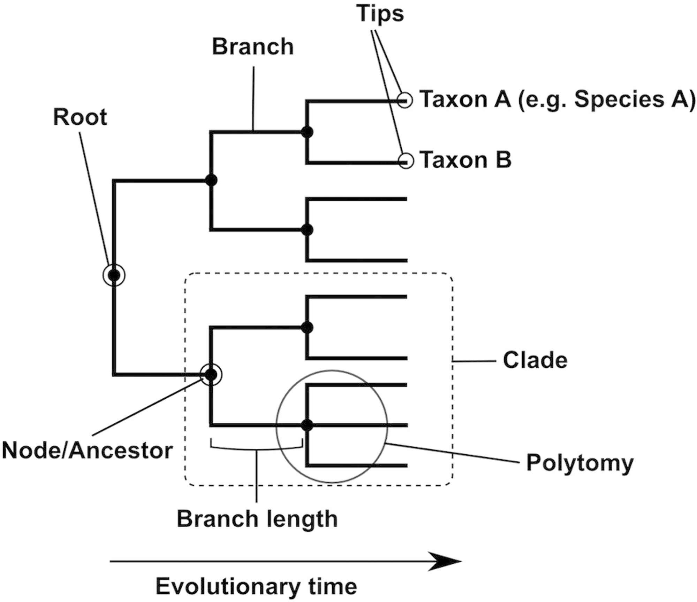

3 Week 3
4 Sequences and Trees
What are sequences and trees useful for in evolutionary epidemiology?
- Prediction capabilities
- Determining is it a point-source, is everybody getting the same virus
- Reconstructing transmission events
- Seeing what evolution has happened outside human hosts
- To see if a pathogen is completely new or related to something else
- Looking for antimicrobial resistance
- Inferring timing of a potential spillover event
Consistent rates in transcriptase, evolution rates, typically at the species level.
- Can be used to identify groups of related strains which are particularly dangerous
- Can identify the source of an epidemic
- Can be used to identify residues under selection
- Can discriminate between hypotheses e.g., did Europeans carry Hepatitis B to the New World, or bring it back with them
- Can estimate transmission rates
We can figure out what genes are under selection pressure.
How might you figure out how things are related?
- Distances measured based on nucleotides
- Phenotypic similarity
- Serotyping; do they activate the same antibodies?
Haemophelus influenzae is a bacterium named because they thought it caused flu.
Andrew Rambaut teaches this by having classes collect specimen, classify them based on how they look, and then they sequence them.
Plastic bag clip discovered in partial colectomy accompanying proposal for phylogenic plastic bag clip classification
“Toxodenta, found incidentally 3 cm …”
https://www.nature.com/articles/nature02029
The only figure in The Origin of Species


What creates differences between sequences in an alignment?
- Insertions/Deletions
- Recombinations
- Translocation
- Point-mutation
- Inversion
- Data reading error/Artifacts
- Incomplete sequence
- Alignment errors
His list:
- Mutations
- Indels
- Recombination
- Errors in raw sequence data
- Errors in bioinformatic processing
- Errors in alignment
- You
Hanage’s Second Law: Anything you discover that is extremely novel, exciting, is almost certainly wrong.
Are all changes equally likely to be observed? Why?
No, because a lot of amino acids can be produced in lots of ways, so you can have different genes (where there’s no selection pressure against it) that can code for the same amino acid.
Also, no, because of different levels of selection.
There is a very strong bias towards preserving the bias. You cannot weight transitions the same as transversions in a distance metric.
For many of these triplets, the third nucleotide has no effect in what is coded.
Imagine comparing the ratio of synonymous to non-synonymous change – dN/dS. What does it mean if this is small? And if it is large?
More synonymous than non-synonymous change is associated with purifying change, and vice versa.
- Because mutations accumulate with time, we can use trees for dating
- With infectious diseases we can make use of ‘measurably evolving populations’ for this
- Sample over time, and plot branch length against time of isolation
Work by Korber et al 2000
The dN/dS ratio is often larger when comparing more closely related things. Especially evident with epidemiologic data, where they may share an ancestor a few years ago. Why?
- Ecologic niches
- Also it takes time to weed out mutations with negative impact
Genetic drift
Time wasn’t enough to weed out the bad non-synonymous mutations.
Answer: Incomplete purifying selection.
We never see mutations that are incredibly lethal to the species, but we can see mutations that are somewhat or close to lethal to the species.

John Maynard Smith is in Bill’s intellectual lineage;
His address is given as Haldane’s Right Hand Side — Haldane was his advisor.
5 Making a Tree
Group the most similar together (smallest distance) are grouped together at an additional node.
Continue to add sequences until none are left.
An iterative process, where we start by joining the closest, then the next closest, etc., etc.,
But we need to weight the process by a substitution model.
Such clustering algorithms:
- Are computationally simple and fast
- Give one tree
- May obscure conflicting signals in the data
- Give no means of comparing hypotheses
5.1 Likelihood and Trees
Likelihood differs from probability in that it assesses how likely data are, given a hypothesis.
It says nothing about how probable the hypothesis is, just the chances that it will give rise to the data if it is true.
We can start with a sequence and search the space of possible trees and substitution models to find those that make the sequence data the most likely.
We would start by looking for the tree. That tree is then given a score for how likely it is.
After fitting the tree, then we look in the parameter space for the substitution model that improves the likelihood measure.
Then go back and forth, iteratively.
This allows for the comparison of resulting phylogenies and substitution models with others in a quantifiable way.
In conclusion:
- Rid yourself of the idea of one tree
- Trees are like calculus — you get better at interpreting them by looking at a lot of them
- Software packages for tree building accumulate, but you should think about it using the principles we’ve discussed
6 Using sequence data in epidemiology – putting trees to work
Unifying the Epidemiological and Evolutionary Dynamics of Pathogens
Bryan T. Grenfell et al. Unifying the Epidemiological and Evolutionary Dynamics of Pathogens.Science303,327-332(2004).DOI:10.1126/science.1090727
In theory, influenza needs to evolve every season because immunity is produced in the prior season that can be circumvented, while measles confers “sterilizing immunity.”
Another difference is the speed of transmission.
Flu is quite seasonal (loves cold, dry season).
We used to have measles outbreaks about every two years because it took about that long for more susceptible babies to be born.
Kingman’s Coalescent 1982
Drummond, Measurably evolving populations, Trends in Ecology & Evolution. 2003. https://www.sciencedirect.com/science/article/pii/S0169534703002167
A. J. Drummond, A. Rambaut, B. Shapiro, O. G. Pybus, Bayesian Coalescent Inference of Past Population Dynamics from Molecular Sequences, Molecular Biology and Evolution, Volume 22, Issue 5, May 2005, Pages 1185–1192, https://doi.org/10.1093/molbev/msi103

from Loman and Pallen, Twenty years of bacterial genome sequencing,
Pybus OG, Rambaut A, Harvey PH. An integrated framework for the inference of viral population history from reconstructed genealogies. Genetics. 2000 Jul;155(3):1429-37. doi: 10.1093/genetics/155.3.1429. PMID: 10880500; PMCID: PMC1461136.
Fraser C, Donnelly CA, Cauchemez S, Hanage WP, Van Kerkhove MD, Hollingsworth TD, Griffin J, Baggaley RF, Jenkins HE, Lyons EJ, Jombart T, Hinsley WR, Grassly NC, Balloux F, Ghani AC, Ferguson NM, Rambaut A, Pybus OG, Lopez-Gatell H, Alpuche-Aranda CM, Chapela IB, Zavala EP, Guevara DM, Checchi F, Garcia E, Hugonnet S, Roth C; WHO Rapid Pandemic Assessment Collaboration. Pandemic potential of a strain of influenza A (H1N1): early findings. Science. 2009 Jun 19;324(5934):1557-61. doi: 10.1126/science.1176062. Epub 2009 May 11. PMID: 19433588; PMCID: PMC3735127.
6.1 Trees and the Law
- In January 1995, a Lafayette LA nurse tested positive for HIV-1
- She was HIV-negative when giving blood less than a year previously
- All 7 sexual partners reported between 1984 and 1995 were tested and found to be HIV negative
- The patient claimed that she had been deliberately infected by her boyfriend, a gastroenterologist, on Aug 5th 94
- He had injected her with blood from an HIV positive patient, claiming it was a vitamin B12 shot
- The prosecution found that an HIV-1 patient had blood drawn in the doctor’s office on Aug 4th 1994
Molecular evidence of HIV-1 transmission in a criminal case, Michael L. Metzker, David P. Mindell, Xiao-Mei Liu, +2 , and David M. Hillis, PNAS, 2002 https://www.pnas.org/doi/10.1073/pnas.222522599
The boyfriend was convicted, but they appealed.
The appeal rested on the idea that the idea were not collected “as per an epidemiological investigation” — possibility of contamination.
Lots of the data came from men who have sex with men — so
The reason the appeal was thrown out was because the data could have ruled out transmission. They didn’t prove transmission, but it could have supported a null hypothesis (that transmission came from another observed patient).
Consider short term vs. long term questions.
For short-term questions such as outbreak investigations, one wants quick data.
- We want to study faster changing parts of the genome, since then it’s very unlikely two sequences are the same unless they’re related.
For longer term data, we want to study slower changing parts of the genome.
- If things change too quickly, it’s harder to reconstruct the phylogenetic tree.
Above is data from the first long-term COVID infected person.
- 45yo male
- Severe anti-phospholipid syndrome, history of diffuse alveolar hemorrhage
- Treated with steroids, cyclophosphamide, rituximab, eculizumab
- Admitted with COVID-19 in April
- First SARS-CoV-2 positive on April 10
- Re-admitted in June for repeat shortness of breath
- Whole-genome sequences were obtained for 4/28, 5/5, 6/24, 6/30
Shortly after, B.1.1.7 came out and looked like one of these
6.2 Morals for Evolutionary Epidemiology
We want: Consistency, Context, and Clarity (we mean resolution) here.
Consistency:
- Means that data should be unambiguous and easy to interpret
- Methods need to be consistent and standardized
Clarity:
- If all isolates are exactly the same, we can’t say anything
- If all isolates are equally different from one another, we also can’t say anything
Context:
Can you relate results to the overall pathogen population structure?
Do you have enough sampling? Is it biased?
(Also metadata on type of disease, location etc)
Consider Pulsed-field gel electrophoresis (PFGE).
In 2014, this was considered best-in-class:
People use this because it’s still cheap.
Rapid Genotyping of Campylobacter coli Strains from Poultry Meat
Multilocus Sequence Typing (MLST)
See Maiden et al PNAS 1998
Can genomic methods unify infectious disease epidemiology?
6.3 Draft Genomes
Typically we end up with a bunch of short reads.
Development of an amplicon-based sequencing approach in response to the global emergence of mpox, PLOS Biology,
https://journals.plos.org/plosbiology/article?id=10.1371/journal.pbio.3002151
Long read technologies are increasingly used – especially in a ‘hybrid’ approach
When people do this, they assemble short reads into “contigs” (contiguous sections). The fewer the contigs, the better.

Grad YH, Lipsitch M, Feldgarden M, Arachchi HM, Cerqueira GC, Fitzgerald M, Godfrey P, Haas BJ, Murphy CI, Russ C, Sykes S, Walker BJ, Wortman JR, Young S, Zeng Q, Abouelleil A, Bochicchio J, Chauvin S, Desmet T, Gujja S, McCowan C, Montmayeur A, Steelman S, Frimodt-Møller J, Petersen AM, Struve C, Krogfelt KA, Bingen E, Weill FX, Lander ES, Nusbaum C, Birren BW, Hung DT, Hanage WP. Genomic epidemiology of the Escherichia coli O104:H4 outbreaks in Europe, 2011. Proc Natl Acad Sci U S A. 2012 Feb 21;109(8):3065-70. doi: 10.1073/pnas.1121491109. Epub 2012 Feb 6. Erratum in: Proc Natl Acad Sci U S A. 2012 Apr 3;109(14):5547. PMID: 22315421; PMCID: PMC3286951.
https://www.pnas.org/doi/abs/10.1073/pnas.1121491109
Until very recently, we have systematically avoided looking at the diversity within patients in microbiology.
Colin J Worby, Marc Lipsitch, William P Hanage, Shared Genomic Variants: Identification of Transmission Routes Using Pathogen Deep-Sequence Data, American Journal of Epidemiology, Volume 186, Issue 10, 15 November 2017, Pages 1209–1216, https://doi.org/10.1093/aje/kwx182
Intrahost single nucleotide variants. iSNVs
Robyn S Lee, Jean-François Proulx, Fiona McIntosh, Marcel A Behr, William P Hanage (2020) Previously undetected super-spreading of Mycobacterium tuberculosis revealed by deep sequencing eLife 9:e53245
Siddle KJ, Krasilnikova LA, Moreno GK, Schaffner SF, Vostok J, Fitzgerald NA, Lemieux JE, Barkas N, Loreth C, Specht I, Tomkins-Tinch CH, Paull JS, Schaeffer B, Taylor BP, Loftness B, Johnson H, Schubert PL, Shephard HM, Doucette M, Fink T, Lang AS, Baez S, Beauchamp J, Hennigan S, Buzby E, Ash S, Brown J, Clancy S, Cofsky S, Gagne L, Hall J, Harrington R, Gionet GL, DeRuff KC, Vodzak ME, Adams GC, Dobbins ST, Slack SD, Reilly SK, Anderson LM, Cipicchio MC, DeFelice MT, Grimsby JL, Anderson SE, Blumenstiel BS, Meldrim JC, Rooke HM, Vicente G, Smith NL, Messer KS, Reagan FL, Mandese ZM, Lee MD, Ray MC, Fisher ME, Ulcena MA, Nolet CM, English SE, Larkin KL, Vernest K, Chaluvadi S, Arvidson D, Melchiono M, Covell T, Harik V, Brock-Fisher T, Dunn M, Kearns A, Hanage WP, Bernard C, Philippakis A, Lennon NJ, Gabriel SB, Gallagher GR, Smole S, Madoff LC, Brown CM, Park DJ, MacInnis BL, Sabeti PC. Transmission from vaccinated individuals in a large SARS-CoV-2 Delta variant outbreak. Cell. 2022 Feb 3;185(3):485-492.e10. doi: 10.1016/j.cell.2021.12.027. Epub 2021 Dec 23. PMID: 35051367; PMCID: PMC8695126.
https://www.cell.com/cell/fulltext/S0092-8674(21)01490-2
Baize et al 2014 NEJM

Dudas and Rambaut, Plos Currents Outbreaks 2014

Different research questions would imply different rationales for how to choose where the root should be.
E.g., investigating an outbreak vs. investigating the evolution of antimicrobial resistance might imply different approaches to choosing the root location.